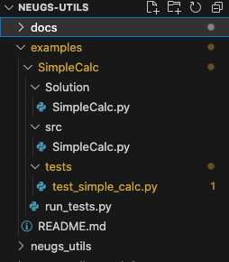

Getting Started¶
This page provides a quick overview of how to get started with neugs-utils, and a few examples of how to use it for your classes.
Installation¶
To install neugs-utils, run the following command:
pip install neugs-utils
Mastery Grading Example¶
The following tutorial is an example on how to use our grader with gradescope. For the most part, this follows the format that student code goes into the src folder, and tests are in the tests folder. You will need to make sure to have installed the neugs-utils package for them to work.
To start off, create a working directory examples. This step assumes that you have neugs-utils setup on your system. Here is a working tree with the directory setup
.
Create your homework assignment SimpleCalc.py under the Solution sub-directory and upload your students’ SimpleCalc.py work under the src sub-directory.
To add a test_simple_calc.py test file into the tests directory use the neugs-add -CTestSimpleCalc tests/test_simple_calc.py command. Make sure you are in the right SimpleCalc directory when running this command. The TestSimpleCalc refers to the class in the test file. You can use neugs-add --help for a full list of arguements used in the above command.
Now add unit tests to your test file, under the class that’s generated by the above build process.
The purpose of this tutorial (according to neugs-utils) is to generate a .JSON file that you will need to upload to gradescope for feedback, as part of the TierMastery grading.
Run your tests locally using the python run-tests.py command to see the .JSON file output.
Building the Autograder.zip¶
To build the autograder, you simply run it in the directory that contains your src and test directories. It will read and pull every file from your tests folder. You do not have to make a test runner, it will do that for you.
neugs-build -o autograder.zip
You will then upload the autograder.zip (or whatever you called it) to Gradescope.
Combing Autograding and Manual Grading¶
TODO: Albert to add this example using one of his courses.